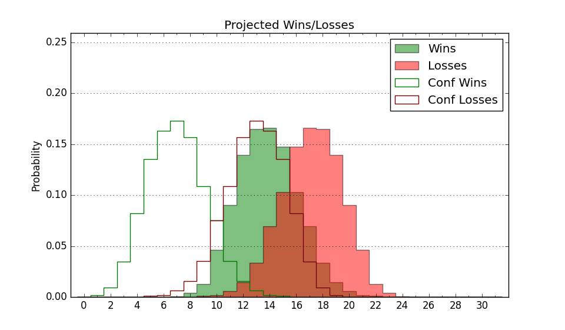

| Home | Game Probabilities | Conferences | Preseason Predictions | Odds Charts | NCAA Tournament |
| City: | New Brunswick, New Jersey | |
| Conference: | Big Ten (4th)
| |
| Record: | 1-1 (Conf) 7-5 (Overall) | |
| Ratings: | Comp.: 11.0 (78th) Net: 10.2 (90th) Off: 113.1 (63rd) Def: 102.9 (130th) SoR: 6.5 (95th) |
| Remaining | ||||||
|---|---|---|---|---|---|---|
| Date | Opponent | Win Prob | Pred. | |||
| 12/30 | Columbia (149) | 84.0% | W 85-72 | |||
| 1/2 | @ Indiana (56) | 25.7% | L 74-82 | |||
| 1/6 | Wisconsin (40) | 44.4% | L 77-79 | |||
| 1/9 | Purdue (28) | 37.5% | L 75-78 | |||
| 1/13 | UCLA (26) | 35.3% | L 67-72 | |||
| 1/16 | @ Nebraska (39) | 18.7% | L 69-79 | |||
| 1/20 | @ Penn St. (34) | 17.8% | L 74-85 | |||
| 1/25 | Michigan St. (23) | 33.5% | L 73-78 | |||
| 1/29 | @ Northwestern (48) | 20.9% | L 66-75 | |||
| 2/1 | Michigan (29) | 38.6% | L 77-80 | |||
| 2/5 | Illinois (17) | 29.8% | L 75-82 | |||
| 2/9 | @ Maryland (7) | 7.8% | L 65-84 | |||
| 2/12 | Iowa (51) | 50.3% | W 83-82 | |||
| 2/16 | @ Oregon (21) | 12.6% | L 70-84 | |||
| 2/19 | @ Washington (93) | 42.4% | L 74-77 | |||
| 2/23 | USC (71) | 61.2% | W 76-73 | |||
| 2/27 | @ Michigan (29) | 15.6% | L 72-85 | |||
| 3/4 | @ Purdue (28) | 15.0% | L 70-82 | |||
| 3/9 | Minnesota (130) | 81.2% | W 74-64 | |||
| Previous | Game Score | |||||
| Date | Opponent | Win Prob | Result | Off | Def | Net |
| 11/6 | Wagner (331) | 96.5% | W 75-52 | -8.6 | 4.8 | -3.9 |
| 11/11 | Saint Peter's (224) | 90.8% | W 75-65 | 3.3 | -4.0 | -0.7 |
| 11/15 | Monmouth (301) | 94.9% | W 98-81 | 15.9 | -17.4 | -1.5 |
| 11/20 | Merrimack (193) | 88.5% | W 74-63 | 3.3 | -0.2 | 3.0 |
| 11/24 | @Kennesaw St. (217) | 72.6% | L 77-79 | -11.3 | 1.9 | -9.4 |
| 11/26 | (N) Notre Dame (65) | 42.6% | W 85-84 | 9.3 | -4.5 | 4.8 |
| 11/27 | (N) Alabama (6) | 11.3% | L 90-95 | 8.9 | 2.2 | 11.1 |
| 11/30 | (N) Texas A&M (27) | 23.7% | L 77-81 | -1.5 | 5.8 | 4.3 |
| 12/7 | @Ohio St. (20) | 12.0% | L 66-80 | 3.5 | -7.4 | -3.8 |
| 12/10 | Penn St. (34) | 42.5% | W 80-76 | 5.8 | 1.2 | 7.1 |
| 12/14 | Seton Hall (143) | 83.2% | W 66-63 | -5.7 | -6.8 | -12.5 |
| 12/21 | (N) Princeton (112) | 64.3% | L 82-83 | -0.1 | -7.5 | -7.6 |
| Stats & Trends | |||||
|---|---|---|---|---|---|
| Current | Day | Week | Month | Season | |
| Composite | 11.0 | -- | -0.4 | +0.2 | -3.4 |
| Comp Rank | 78 | -- | -3 | +1 | -23 |
| Net Efficiency | 10.2 | -- | -0.4 | +3.1 | -- |
| Net Rank | 90 | -- | -3 | +20 | -- |
| Off Efficiency | 113.1 | -- | +0.1 | +2.1 | -- |
| Off Rank | 63 | -- | +4 | +21 | -- |
| Def Efficiency | 102.9 | -- | -0.5 | +1.0 | -- |
| Def Rank | 130 | -- | +2 | +39 | -- |
| SoS Rank | 72 | -- | +12 | +250 | -- |
| Exp. Wins | 13.8 | +0.0 | -0.9 | -0.6 | -2.5 |
| Exp. Conf Wins | 7.0 | +0.0 | -0.3 | +0.1 | -1.9 |
| Conf Champ Prob | 0.1 | -0.0 | -0.1 | -0.2 | -2.4 |

| Advanced Stats | ||
|---|---|---|
| Stat | Value | Rank |
| Off Eff FG % | 0.546 | 76 |
| Off Ast Ratio | 0.146 | 174 |
| Off ORB% | 0.284 | 185 |
| Off TO Rate | 0.132 | 71 |
| Off FT Ratio | 0.382 | 78 |
| Def Eff FG % | 0.509 | 179 |
| Def Ast Ratio | 0.139 | 131 |
| Def ORB% | 0.258 | 92 |
| Def TO Rate | 0.149 | 181 |
| Def FT Ratio | 0.262 | 45 |